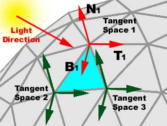
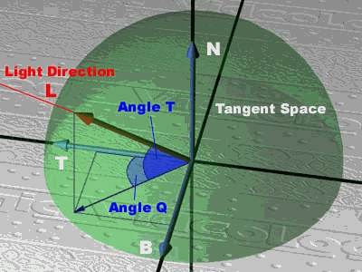
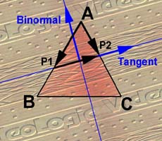

Figure 1 - Bump Mapping
|
Subject: The Maths for a Practical Approach This material may not be republished in any format without the express consent of its authors. Information contained herein is provided "as-is", without representations or warranties, and is subject to change without notice. |
Bump Mapping Overview
Bump mapping is a high definition surface lighting technique that has been around for two decades. James Blinn, in 1978 wrote an article for Computer Graphics called ‘Simulation of wrinkled textures’ where the bump mapping procedure was described for the first time. This article is now a classic, and there is no paper about bump mapping without reference to James Blinn.
The bump mapping technique is based in a 2D map that stores information about the roughness of a surface. The render engine scans this map pixel by pixel and calculates the corresponding intensity value that will be applied on the texture underneath, creating high-definition shading over a flat surface.
A bump map is a 2D map that stores 3D data as black and white pixels corresponding to low and high surface elevation, respectively. This texture is mapped onto an object together with a ‘solid’ base texture. Once the light direction is given, the render engine can calculate the corresponding normal for each single point on the surface creating a light map that is blended with the base texture.
When the light source is moved or the surface orientation changed, the light map is recalculated. This method allows for great 3D detail whilst requiring a low polygon count.
|
|
|
Figure 1 - Bump Mapping |
Light Direction and Tangent Space
In addition to the bump map texture it is necessary to supply the correct light direction for every vertex in the mesh. It is not as straight forward as it looks because this direction must be calculated using the surface orientation.
For every single vertex, a different local co-ordinate system is necessary. These co-ordinate systems are called tangent spaces.
A tangent space is defined for 3 perpendicular axes where one of them (N) must be the surface normal at that point, and where the two other axes (T and B) must be on the tangent plane.
The T axis (called tangent vector) has to be parallel to the texture U direction, and the B axis (called binormal) is perpendicular to both T and N.
Once we have calculated the tangent space for all the vertices, the light direction must be transformed into that tangent space to get the final value needed for bump mapping calculations. Assuming a parallel source of light (very far away) this transformation is just the dot product between the light vector and the three axes of the tangent space.
The steps to calculate the light source for the vertices are:
Px(v) = L . T(v)
Py(v) = L . N(v)
Pz(v) = L . B(v)
PowerVR additionally requires the conversion of the light position, already transformed from Cartesian co-ordinates, to polar co-ordinates.
|
 |
|
Figure 2 - Tangent Space |
PowerVR Bump Mapping Format
PowerVR Series2 technology uses a special bump map format that is optimised for its hardware.
Instead of storing coloured pixels, a couple of polar co-ordinates are stored in each pixel. These co-ordinates (S and R) are the elevation and azimuth of the normal vector in each point of the bump surface. These values are packed together in a 16-bit format where 8 bits express r and 8 bits express s:
S = (PI/2 * elevation/256)
R = (2*PI * azimuth/256)
This map is automatically generated from an intensity-map (where the gradation of grey means the height of the bump surface) for any of the PowerVR Series2 texture tools.
Once you have mapped the texture onto your object, the light source vector (L) has to be calculated for each vertex, and must be expressed in polar co-ordinates as well.
Lx = cos(T)*cos(Q)
Ly = sin(T)
Lz = cos(T)*sin(Q)
Where T is the elevation and Q is the azimuth of the light source.
T = (PI/2 * Light_elevation/256)
Q = (2*PI * Light_azimuth/256)
|
 |
|
Figure 3 - Tangent Space |
Applying a scale factor or strength (S) to these values, K1, K2 and K3 are defined as follow:
K1 = (1 - S)
K2 = sin (T) * S
K3 = cos (T) * S
These values and the angle Q must be given as the offset (specular) colour of the vertex.
Alpha = K1 = (1 - S)
Red = K2 = sin (T) * S
Green = K3 = cos (T) * S
Blue = Q
Note: K1, K2, K3 and Q have to be expresed in a range from 0 to 255.
How to Calculate the Tangent Space
Every single vertex in our object has a different tangent space. These tangent spaces must be calculated only once and stored in memory.
One of the axes of this local co-ordinate system is the surface normal (N) at that point. The other two axes reside in the tangent plane and we only have to determine the direction they are pointing to.
This direction is the same as the texture co-ordinates at that specific place. Texture co-ordinates are 2D data that give us the position of our vertex in the 2D-texture plane, allowing us to wrap a texture over the model. Following the usual convention, I will call these co-ordinates UVs, where U means the ordinate axis and the V the abscise axis in the texture plane.
It is very important to realise that we have to convert this 2D data in a 3D direction, projecting the UVs into the tangent plane. This direction will be our tangent vector (T). The binormal axis (B) will be the cross product between T and N.
Here is a step-by-step description of the procedure:
Select the polygon
Firstly, given a specific vertex (A), you have to find a polygon to which it belongs. If the vertex is shared by several polygons, any one can be used. The remaining vertices of the chosen polygon are then named (B) and (C).
Find where U=0 in the side AB (P1).
(Au, Av) and (Bu, Bv) are the UV co-ordinates of A and B. These values form a vector in the 2D space. If we multiply this vector by ModUV1 = -Au / (Bu-Au) we get a new vector with one of the extremes (B) exactly where U=0.
We multiply this value ModUV1 by the 3D vector (B-A) to get the point P1.
If (Bu-Au) is 0, the vector (B-A) is already aligned with the V direction, so we jump the next two steps and use (B-A) as the vector in the Tangent direction.
ModUV1 = -Au / (Bu-Au)
P1x = ModUV1 * (Bx-Ax)
P1y = ModUV1 * (By-Ay)
P1z = ModUV1 * (Bz-Az)
Find where U=0 in the side AC (P2).
Same process, but now using the vector (C-A)
ModUV2 = -Au / (Cu-Au)
P2x = ModUV2 * (Cx-Ax)
P2y = ModUV2 * (Cy-Ay)
P2z = ModUV2 * (Cz-Az)
Find the binormal vector
The vector (P2-P1) follows the tangent direction (but it is not the tangent vector).
The binormal vector (B) is the cross product between the normal and the vector (P2-P1) already normalised.
The cross product between the binormal (B) and the normal (N) gives us the tangent vector (T).
B = N x normalised(P2-P1)
T = N x B
Store all the results
We store the tangent space (N, T and B) and repeat the same process with the next vertex.
Note: N (normal) is already stored with the vertex data so we only need to store T and B (6 floats in total)
|
 |
|
Figure 4 - Tangent Space |
How to Calculate the Tangent Space (Easy Method)
There is a very easy method of calculating the local co-ordinate system for each vertex.
This method supposes that the UV mapping has been applied in the same direction (looking upwards), and it works fine when planar, spherical or cylindrical mapping has been used.
If the mapping direction is different, the bumpmap surface will look like it is receiving the light from a wrong direction.
This method is explained here just because it is very easy for simple objects, but we don’t recommend using it for the general case.
Step-by-step description of the procedure per vertex:
How to calculate K1, K2, K3 and Q
Every frame we have to calculate K1, K2, K3 and Q for all the vertices in our object.
This process is very similar to the calculation of smooth shading and has four steps:
Transform using Inverse World Matrix
When you transform an object, its normals have to be transformed to calculate the correct lighting. If you are using a parallel light source it is not necessary because you can get the same effect applying the inverse world matrix to the light direction only.
It is the same for tangent spaces; we only have to transform the light direction (L) using the inverse matrix (M-1) of the world transformation.
L’(x,y,z) = L . M-1
Transform into Tangent Space
Once we have calculated L’, we transform it into the local co-ordinate system defined in each vertex by the tangent space (B, N, T). A dot product between L and the three axes of the tangent space give us the three co-ordinates of the light direction expressed in this local system (Px, Py, Pz).
Px = L’. B
Py = L’. N
Pz = L’. T
Convert the Light Direction
We use Py (L’ x N) to calculate the smooth shading value of the base object. Light colour = (r, g, b)
Red = Py * r
Green = Py * g
Blue = Py * b
Calculate K1, K2, K3, Q
PowerVR Series2 uses polar co-ordinates only, so we have to transform P from a Cartesian co-ordinates system into polar co-ordinates. We need to know Q, K2 = Sin(T) and K3 = Cos(T) where Q and T stand for the elevation and azimuth of the vector P.
Normalised (P)
Q = arctan (Pz/Px [0 to 2*PI (four quadrants)]
Q = (2*PI * Q/256 [0 to 256]
K2 = sin(T) = Py [-1 to 1]
K2 = (1 + K2) * 128 [0 to 256]
K3 = cos(T) = sqrt ( 1 - Py2) [-1 to 1]
K3 = (1 + K3) * 128 [0 to 256]
This task could use a fast routine that uses a defined table for approximate arctan computation.
End of Document